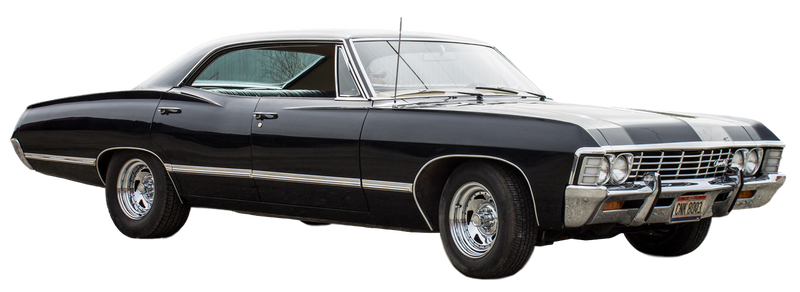
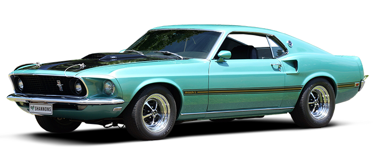
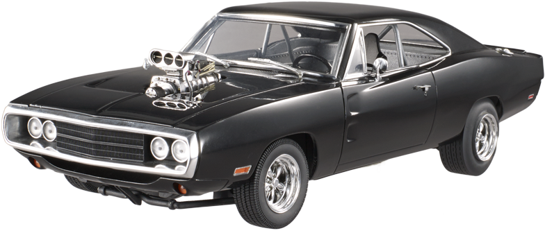

Reviva as clássicas máquinas dos anos 70-80, por preço justo e amigável.
Você conhece o Impalão 67?
O Impala 67 foi totalmente refeito, se comparado com o modelo de início da quarta geração apresentado em 1965 tem Dotado de um estilo chamado “garrafa de Coca-Cola” o Impala 67
Tem uma forte inspiração na sensação da Chevrolet, o Corvette. COMPRE por apenas R$ 400,000.00
Você conhece o Mustang 74?
Joe Oros, o desenhista do mustang homenageou de John Najjar ao avião de caça da 2ª Guerra Mundial o P-51 Mustang, que ele pilotou.
COMPRE por APENAS R$ 350,000.00
Você conhece o Dodge Charger 69?
O Dodge trouxe itens dos modelos de competição, como as grandes lanternas retangulares traseiras, a nova grade dianteira com uma divisão central.
Outra novidade era a série SE, que oferecia acabamento em madeira. COMPRE por APENAS R$ 250,000.00